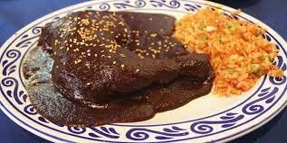
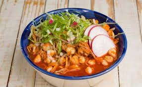
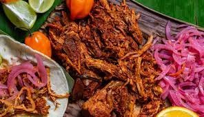

El término mole (del náhuatl molli o mulli) se refiere a varios tipos de salsas mexicanas muy condimentadas hechas principalmente a base de chiles y especias, y que son espesadas con masa de maíz, tortilla o pan; también se refiere a los mismos guisos a base de carne o vegetal que se suelen preparar con estas salsas espesas.El mole es de origen prehispánico, y era ofrecido en ceremonias como ofrenda a los dioses.

POZOLE
El pozole (proviene del náhuatl pozolli, de tlapozonalli, 'hervido' o 'espumoso') es una sopa tradicional mexicana hecha a base de granos de maíz nixtamalizados, comúnmente de la variedad cacahuazintle, al que se agregan carnes, verduras y especias muy variadas según la región. A este versátil platillo se le puede acompañar con diversos ingredientes, que varían según la zona y costumbres.

COCHINITA PIBIL
La cochinita pibil (en maya yucateco, píibi’k’éek’en) es un guiso correspondiente a la gastronomía de Yucatán, basado en carne de cerdo adobada en achiote, envuelta en hoja de plátano y cocida dentro de un horno de tierra usando una técnica prehispánica conocida como píib. Según recetas de principios de 1900, el puerco entero (eviscerado y con el pelo quemado) era cocido en el horno de tierra.La cochinita pibil se acompaña con cebolla morada en naranja agria y chile habanero, muy común en la región.

CHILES EN NOGADA
El chile en nogada (más comúnmente chiles en nogada, en plural, a pesar de que no suele servirse más que un único chile) es uno de los platillos típicos de la gastronomía del estado de Puebla. Ha sido llamado el "platillo mexicano por excelencia". Se prepara con chile poblano capeado, relleno de un guisado de picadillo y frutas, que incluye acitrón, y para finalizar, se cubre con crema de nuez de Castilla (nogada), y granos de granada.